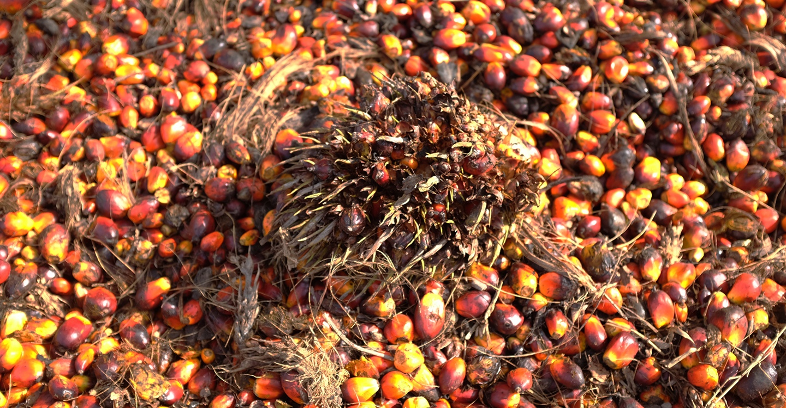
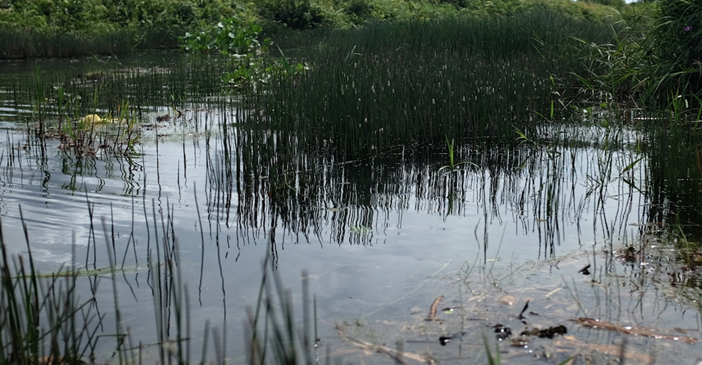
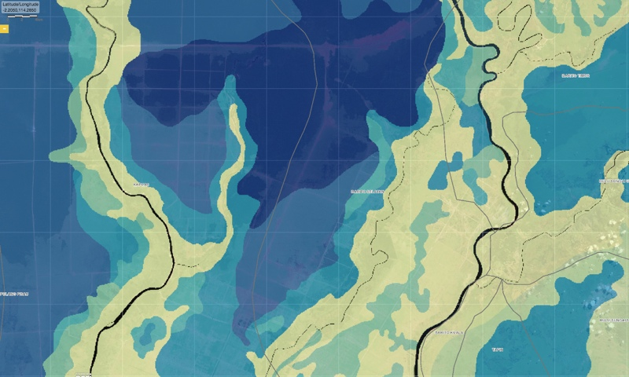
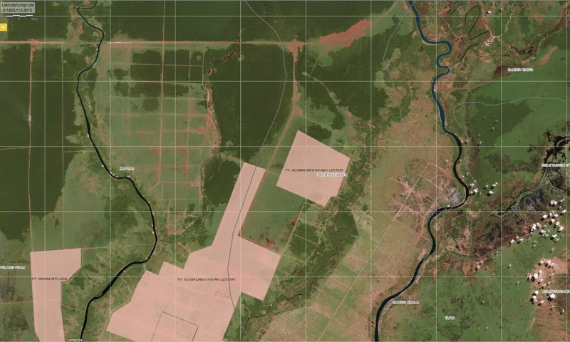

Kalimantan
Semu, Investasi Sawit di eks Gambut Sejuta Hektare
Oleh Clara Rondonuwu
Perkebunan sawit skala besar membeli tanah-tanah garapan di bekas Pengembangan Gambut Sejuta Hektare —proyek pangan era Orde Baru.
Ke tengah bentang gambut yang masih mengepul, Lambung Oskar Nyalin memacu motornya. Melewati serombongan kecil pekerja yang menyelesaikan panen sawit taraf terakhir. Bue – sapaan kakek 61 tahun tersebut – hendak mengantar saya menuju sebidang tanah sengketa seluas 187,7 hektare di Sei Rigei, Desa Dadahup, Kecamatan Dadahup, Kabupaten Kapuas, Kalimantan Tengah.
Adapun, sampai di tanah yang dimaksud, brondol sawit tampak berserakan di sana-sini. "Tanahku sudah dipanen lagi!" Bue berujar dengan gemas.
Patok yang menancap dekat kami berdiri menerangkan bahwa PT Globalindo Agung Lestari (GAL) telah menyemai bibit sawit dumpy di tanah itu sejak 2009. Tanah yang masih terdaftar atas nama Bue dan sanak familinya dari Dayak Ngaju tersebut sudah lima tahun disulap menjadi kebun plasma. Perusahaan memanen sawitnya, namun tidak satu sen pun uang bagi hasil diterima oleh pemilik lahan.
Tergantung pada dinding Kantor Proyek Pengembangan Rawa Dadahup-Lamunti di Kuala Kapuas, saya menemukan potret hamparan tersebut saat Presiden Soeharto berkunjung pada April 1997. Soeharto tampak sedang mengamati semak cabai siap panen dengan senyum terkembang. Kunjungannya ke wilayah yang berjarak 150 kilometer di selatan ibu kota Palangkaraya tersebut untuk memantau persiapan panen perdana Proyek Lahan Gambut Sejuta Hektare. Adapun Dadahup dan Lamunti, yang mencakup juga tanah adat keluarga Bue, ialah wilayah penempatan transmigrasi pertama dalam realisasi proyek pangan raksasa tersebut.
Repro/Clara
Wilayah yang semula merupakan bentang tropis dengan kubah-kubah gambut sedalam 20 meter dalam sekejap berubah menjadi lahan-lahan usaha transmigrasi. Untuk mengairi megaproyek tadi, pemerintah juga membuka saluran pembuangan air gambut dan kanal sepanjang 4.470,81 kilometer. Dan, tak butuh waktu lama untuk menguji bahwa skenario swasembada berikut kanalisasinya tersebut sesungguhnya skenario bencana.
Bukannya mengairi petak-petak lahan usaha transmigran, jaringan kanal yang ada justru membuang air dari gambut tropis Kalimantan Tengah ke sungai alam. Dan, 'secara sistematis' menyebabkan ekosistem gambut tropis tersebut kering. Halnya dengan produktivitas, pakar dari universitas mengkaji bahwa pembukaan gambut tropis Kalimantan untuk pertanian ialah kelelahan yang sia-sia. Sebab ternyata, hanya 10 persen dari jutaan lahan tersebut yang cocok untuk ditanami.
Pembukaan gambut terluas se-Asia Tenggara di Kalimantan Tengah tak pernah mendatangkan jutaan kapital, sebagaimana dijanjikan Soeharto kepada petani. Pun swasembada pangan yang difantasikan mampu menandingi swasembada beras 1985.
Tepat pada 1999, pemerintah resmi menutup proyek pangan raksasa itu. Pengiriman transmigran disetop. Upaya meningkatkan produksi beras dengan menanami gambut di Kalimantan Tengah ikut tumbang bersama dengan pemerintahan Soeharto. Namun celaka, fungsi penyimpan air pada gambut sudah terlanjur lenyap dan tidak optimal lagi. Inilah biang persoalan menahun yang membuat bencana bergulir menjadi semacam pertunjukkan kolosal yang berdurasi panjang.
-
 Tumpukan sawit di atas tanah milik Lambung Oskar Nyalin, Sei Regei, Desa Dadahup, Kecamatan Dadahup, Kabupaten Kapuas, Kalimantan Tengah, Desember 2014. Ekuatorial/Clara
-

Cucu Lambung Oskar Nyalin memperlihatkan posisi tanah milik keluarganya yang terjepit resor sawit milik PT GAL di Desa Dadahup, Kecamatan Dadahup, Kabupaten Kapuas, Kalimantan Tengah, Desember 2014. Ekuatorial/Clara
-

Hutan purun yang terbakar hebat di Kecamatan Lamunti, Kabupaten Kapuas, Kalimantan Tengah, Desember 2014. Ekuatorial/Clara
-
 Hamparan purun yang mulai tumbuh kembali di kawasan eks Proyek Gambut Sejuta Hektare yang terbengkalai, Kabupaten Kapuas, Kalimantan Tengah. Purun (Fimristylis) ialah tanaman rawa yang merupakan bahan dasar anyaman Dayak. Ekuatorial/Clara
Mengompres kerusakan gambut buah kegagalan Soeharto dengan ekspansi sawit, apa mujarab?
Total, sudah 2.982 hektare sertifikat tanah garapan di eks Proyek Gambut Sejuta Hektare yang diserahkan kepada perusahaan sawit untuk kebun plasma. Tersisa 187,7 hektare — termasuk tanah garapan Bue — yang masih bersengketa lantaran ganti rugi jauh di bawah ekspektasi.
"Satu setengah juta per hektare aku tidak mau. Langsung kucabut surat-surat dari kepala desa," ungkap Bue mengenai nilai ganti rugi yang ditentukan sepihak oleh PT GAL. Sejumlah transmigran dan sanak famili meniru langkahnya. Medio 2014, mereka melayangkan surat pengaduan kepada Bupati Kapuas.
Untuk jangka panjang, kelompok yang menolak bergabung dengan kebun plasma pun memilih untuk menggarap mandiri lahan usaha mereka. Dengan mengharap ada bantuan bibit sawit dari Dinas Perkebunan setempat.
Ya, walau berseberangan dengan perusahaan sawit namun umumnya transmigran sepakat untuk mengganti tanaman pangan mereka dengan sawit. Komoditas sawit dianggap lebih bernilai ketimbang menanam tanaman pangan seperti padi gogo dan palawija, seperti anjuran Inpres 2/2007 tentang Percepatan Rehabilitasi dan Revitalisasi Kawasan Pengembangan Lahan Gambut untuk wilayah Dadahup dan Lamunti.
"Yang diharap memang sawit, sayapun sudah mau nanam sendiri,” demikian Maksum, transmigran asal Ngawi, Jawa Timur, saat ditemui di Desa Petak Batuah, Kecamatan Dadahup, Kabupaten Kapuas, Kalimantan Tengah. Semasa Proyek Gambut Sejuta Hektare, Dadahup yang adalah 'gerbang' dari mimpi Soeharto tersebut masih bernama Blok A2.
Ada pengalaman menanam sawit? "Belum, cuma kisah-kisah dari kawan-kawan saja kalau nanam sawit itu menjanjikan," sambung Maksum.
Adapun Suwido Limin dari Center for International Cooperation in Sustainable Management of Tropical Peatland (CIMTROP) mengatakan bahwa situasi di eks Proyek Gambut Sejuta Hektare menjadi sangat rumit.
"Ada pihak-pihak, entah tahu atau tidak, menggunakan sebagian lahan eks Proyek Gambut Sejuta Hektare untuk mengembangkan kelapa sawit. Padahal jelas dari pihak kita, selaku ilmuwan, itu tidak direkomendasikan. Sangat bahaya." Apa daya, dalam kasus ini lagi-lagi ilmu dikalahkan oleh uang.
Suwido menyoal, sawit menghendaki sekitar 80-100 centimeter permukaan tanah bebas air. Di situ dasar keberatannya, sebab menurut dia menguras wilayah gambut yang sudah terdegradasi hanya memperparah hidrologi dari gambut. Menyebabkan water table turun dan lapisan gambut di bagian atas menjadi rentan tersulut.
Gambut seharusnya berair. Gambut mentah dengan kategori fibrid seperti di Kalimantan Tengah mampu menahan air 10-11 kali lebih berat dari gambut tersebut. Maka, lanjut Suwido, 10 kilogram gambut ibaratnya sanggup 'memegang air' 100 liter sampai 110 liter.
Dan, itu alasan mengapa penting menutup kanal-kanal di eks Proyek Lahan Gambut Sejuta Hektare yang menyambung dengan sungai alam. Ketimbang memperlebar kanal yang sudah ada, sehingga overdimensi dan mengundang petaka.
Menurut Suwido, gambut mentah di Kalimantan Tengah tidak bisa disamakan dengan gambut Riau. Di daerah Sumatera seperti Riau, topografi gambutnya bergelombang sehingga ada pengayaan unsur hara dari dataran tinggi sekitar. Sementara itu, di Kalimantan Tengah gambut terletak di daerah sangat datar, sehingga pengayaan unsur hara hanya mengandalkan hujan.
Maturidi, Ketua Simpul Kalimantan Tengah the Society of Indonesian Journalists, memberikan kontribusi di dalam tulisan ini.
Kanal-Kanal yang Fatal
Berkelotok dari Desa Dadahup (Kalimantan Tengah) menuju Sungai Barito (Kalimantan Selatan), kami mengarungi jejaring pengairan dalam wilayah eks Proyek Gambut Sejuta Hektare. Melewati Primer Sambu, sebuah kanal selebar belasan meter yang menghubungkan dua sungai alam, yakni Kahayan dan Barito.
Kanal induk tersebut memanjang sampai 187 kilometer. Menurut Maksum, transmigran asal Ngawi penghuni Blok A2 (kini disebut Desa Petak Batuah, Kecamatan Dadahup, Kabupaten Kapuas), setiap tahunnya luapan Barito masuk melalui saluran besar tersebut. Melewati kanal menganga di wilayah Kahuripan, lantas menggenangi blok-blok sawah atau ladang transmigran.
“Walaupun A2 tergolong blok dengan permukaan tanah paling tinggi, tetapi kalau luapan dari Barito sudah masuk maka petak-petak tenggelam juga,” ujar Maksum. Banjir terparah terjadi bersamaan dengan momentum tsunami Aceh pada Desember 2004. Menurut dia, tinggi air mencapai 1,5 meter dan jalan-jalan tenggelam cukup lama. Panen di Blok A1, A2, A4, A5, dan Blok C gagal total. Banyak transmigran menjual rumah mereka.
Belajar dari kondisi musim hujan ekstrem tersebut, jalan-jalan di Desa Petak Batuah ditinggikan dan saluran tersier dibenahi. Adapun, panen tak pernah kembali ke kondisi normal.
“Sampai sekarang, sebagian nanam sebagian enggak. Seandainya tidak terkendala hujan ekstrem pada bulan 12 (Desember) sampai bulan 1 (Januari), bisa panen sekitar 3 ton per hektare. Ya, memang belum seperti di Jawa yang hasilnya bisa 7 ton per hektare,” kisah Maksum. Menurut dia, ketidakpastian panen ikut mendorongnya untuk melirik peluang menanam sawit. “Walau memang sekarang belum ada lahan garapan di Blok A2 yang dikasihkan ke sawit, tidak seperti di Lamunti.”
Sementara itu, peneliti gambut Universitas Gadjah Mada Oka Karyanto pesimistis kanal induk yang menganga di kawasan eks Gambut Sejuta Hektare akan mampu dibendung. Menurutnya, tidak mungkin kanal primer yang teramat lebar dan dalam tersebut bisa dikelola. “Desainnya memang bukan untuk menata air, tapi mengeluarkan kayu. Utamanya di kawasan PLG (Gambut Sejuta Hektare),” kata dia, berbicara di kantor Tempo, beberapa waktu lalu.
-

Peta 1 : Wilayah yang masuk kawasan moratorium 2014.
Data Global Forest Watch memperlihatkan tumpang tindih kawasan antara konsesi sawit, peta moratorium hutan 2014, dan peta kedalaman gambut 2002 di wilayah eks Pengembangan Lahan Gambut, Kalimantan Tengah. Sumber: Global Forest Watch Fires -
 Peta 2 : Konsensi kelapa sawit.
Data Global Forest Watch memperlihatkan tumpang tindih kawasan antara konsesi sawit, peta moratorium hutan 2014, dan peta kedalaman gambut 2002 di wilayah eks Pengembangan Lahan Gambut, Kalimantan Tengah. Sumber: Global Forest Watch Fires -

Peta 3 : Bentang kawasan eks Proyek Gambut Sejuta Hektare di Kabupaten Kapuas, Kalimantan Tengah.
Data Global Forest Watch memperlihatkan tumpang tindih kawasan antara konsesi sawit, peta moratorium hutan 2014, dan peta kedalaman gambut 2002 di wilayah eks Pengembangan Lahan Gambut, Kalimantan Tengah. Sumber: Global Forest Watch Fires -
 Peta 4 : Sebaran gambut dan kedalamannya menurut Peta Gambut 2002.
Data Global Forest Watch memperlihatkan tumpang tindih kawasan antara konsesi sawit, peta moratorium hutan 2014, dan peta kedalaman gambut 2002 di wilayah eks Pengembangan Lahan Gambut, Kalimantan Tengah. Sumber: Global Forest Watch Fires
Direnggut sawit
Sementara itu Yakubson, dari Kantor Proyek Pengembangan Rawa Dadahup-Lamunti, Kementrian Pekerjaan Umum, punya penekanan berbeda. Khususnya tentang penggunaan jejaring pengairan di eks Gambut Sejuta Hektare Kalimantan Tengah.
Saat ini, kata dia, sejumlah gambut dalam di utara Blok A telah dilepas untuk konsesi sawit. Sesuai Inpres 2/2007 tentang Percepatan Rehabilitasi dan Revitalisasi Kawasan Pengembangan Lahan Gambut di Kalimantan Tengah, wilayah tersebut memang diperuntukan untuk jenis tanaman keras. “Tetapi sesungguhnya peruntukan tersebut tidak berlaku di gambut tebal. Ini berbeda dengan ‘keberanian’ pemerintah daerah untuk berspekulasi dengan memberi izin-izin konsesi,” kata Yakubson, yang khawatir kebijakan tersebut justru menyulitkan upaya Kementrian Pekerjaan Umum dan Balai Penelitian Rawa yang tengah mengerjakan canal blocking di kubah gambut kawasan tersebut.
Terlebih lagi, saat ini sejumlah perusahaan sawit juga mulai menguasai infrastruktur pengairan yang awalnya dibangun negara untuk masyarakat. “Yang bisa berkebun di kawasan Eks Gambut Sejuta Hektare ialah masyarakat, bukan investor. Sebab, dahulu jaringan dibangun untuk masyarakat,” ujarnya. Atas nama plasma dan dengan bermacam trik, sejumlah perusahaan secara sewenang-wenang memperpanjang kanal sampai ke gambut dalam.
“Utara Blok A yang dekat Barito Selatan tergolong gambut yang dalam sekali. Masih banyak kerbau rawa di sana. Seharusnya ini dikonservasi, apalagi di tanah gambut pertanian tidak akan bisa hidup,” imbuh Yakubson.
Menghadapi situasi ini, Kementrian Pekerjaan Umum pun menurunkan tim penyidik ke eks Gambut Sejuta Hektare. “PT Globalindo Agung Lestari sekarang sedang kami periksa, lantaran mengeruk tanpa izin.” (Clara Rondonuwu/Maturidi)